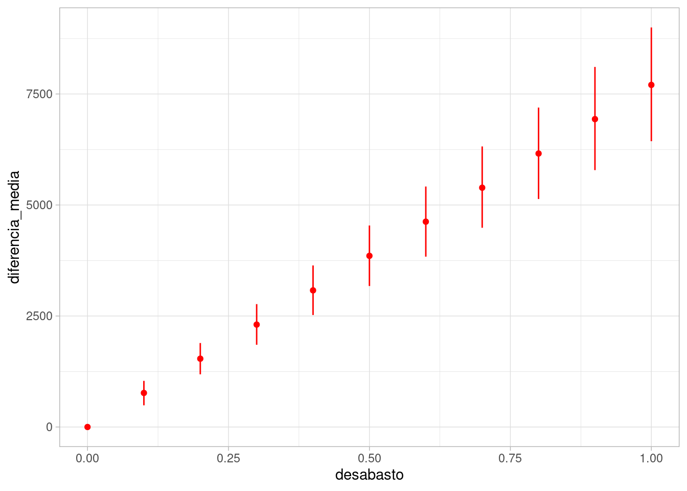
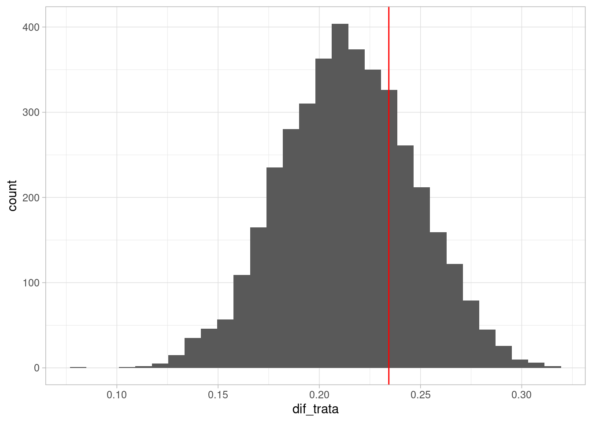

Código
library(tidyverse)
library(kableExtra)
library(DiagrammeR)
ggplot2::theme_set(ggplot2::theme_light())
inv_logit <- \(x) 1 / (1 + exp(-x)) En esta parte consideramos nuestros modelos gráficos no simplemente como maneras de factorizar un modelo probabilístico, sino también como una manera de establecer nuestros supuestos causales acerca del problema de interés. Estos son supuestos que son necesarios para hacer inferencia causal.
Comenzaremos entonces con una pregunta fundamental de inferencia causal: ¿qué sucede si modificamos una variable \(X=x\) en una respuesta \(Y\)? ¿Podemos estimar este efecto a partir de datos observados? La respuesta dependerá de nuestros supuestos causales, y veremos varios ejemplos de cuándo es posible y cómo identificar y calcular estas estimaciones causales.
library(tidyverse)
library(kableExtra)
library(DiagrammeR)
ggplot2::theme_set(ggplot2::theme_light())
inv_logit <- \(x) 1 / (1 + exp(-x)) Desde el punto de vista de Pearl, nuestro objeto principal de interés es la distribución condicional de la respuesta dada una manipulación, que define como \[p(y | do(x))\] Esto significa: ¿cómo se distribuye la \(Y\) dado que intervenimos en la población completa (aunque podemos también considerar subpoblaciones más adelante) para poner en \(X=x\)?. En primer lugar, notemos que esto no es lo mismo que la distribución
\[p(y|x)\] que podemos estimar directamente de los datos.
Supongamos que tenemos el siguiente modelo del diagrama causal:
grViz("
digraph {
graph [ranksep = 0.2]
node [shape=plaintext]
edge [minlen = 3]
U_t -> T
T -> A
T -> Z
U_a -> A
U_z -> Z
}
")donde \(T\) es la temperatura, \(A\) son las unidades de agua embotellada vendida y \(Z\) es la actividad de los mosquitos (medido con muestreo, por ejemplo). Mostramos también otras variables causales que pueden afectar a las variables de interés (muchas veces omitimos estas variables que solo afectan a una variable de interés), pero que no tienen efecto sobre otras variables del diagrama.
No interesa contestar la pregunta: ¿qué tanto influyen las ventas de agua embotellada en la actividad de los mosquitos? Del diagrama, sabemos que no hay ningún camino causal de \(Z\) a \(T\), por lo que nuestra respuesta debería ser igual a 0.
Sin embargo, sabemos que estas dos variables están asociadas (por el análisis de DAGs), de manera que describir cómo cambia \(p(z|a)\) cuando condicionamos a distintos valores de \(a\) no responde nuestra pregunta. La distribución \(p(z|do(a))\) nos dice cómo se distribuye \(Z\) cuando manipulamos \(a\) artificialmente. Por ejemplo, si cerramos todas las tiendas un día haciendo \(do(a=0)\), veríamos que esta variable no tiene efecto sobre la actividad de mosquitos, por ejemplo comparado con \(do(a = 10000)\).
Ilustramos la diferencia entre \(p(y|x)\) y \(p(y|do(x))\) simulando del ejemplo anterior. Supondremos que sólo consideramos un día del año a lo largo de varios años, para no modelar el comportamiento cíclo de la temperatura:
simular_t <- function(n = 10, dia = 150){
# simular un año, alrededor del día 160 (en junio)
t_maxima <- rnorm(n, 28, 2)
mosquitos <- rpois(n, 250 + 10 * (t_maxima - 28))
unidades <- rnorm(n, 20000 + 2000 * (t_maxima - 28), 2000)
tibble(t_maxima, unidades, mosquitos)
}
set.seed(128)
simular_dias <- simular_t(50)Si simulamos, vemos que \(mosquitos\) y \(unidades\) son dependientes, pues tenemos un camino abierto dado por la bifurcación en temperatura:
ggplot(simular_dias, aes(x = unidades, y = mosquitos)) + geom_point() +
geom_smooth(method = "loess", method.args = list(degree = 1)) +
xlab("Ventas de agua embotellada")`geom_smooth()` using formula = 'y ~ x'
Sabemos que esta asociación no es causal, pues no hay caminos causales entre estas variables dos variables, pero que hay una dependencia debido a la bifurcación en \(T\). La gráfica muestra que la media condicional \(E[M|A=a]\) depende fuertemente de \(a\), lo que quiere decir que \(p(m|a)\) depende de \(a\) fuertemente.
En este caso, nos interesaría saber qué sucede si alteramos artificalmente el número de botellas de agua vendidas (puedes imaginar distintas maneras de hacer esto).
Cuando hacemos esto, quitamos las aristas que van hacia \(A\), pues \(A\) ya no está determinado por el proceso generador de datos. Tenemos entonces la nueva gráfica:
grViz("
digraph {
graph [ranksep = 0.2]
node [shape=plaintext]
A
edge [minlen = 3]
U_t -> T
T -> Z
U_m -> Z
{ rank = same; A; Z }
}
")En esta nueva gráfica, \(A\) y \(Z\) son independientes, que es la respuesta correcta. Veamos cómo simularíamos de esta gráfica después de la cirugía. Establecemos un valor fijo de unidades, y seguimos el resto del modelo:
simular_cirugia <- function(n = 10, unidades = unidades){
# simular un año, alrededor del día 160 (en junio)
t_maxima <- rnorm(n, 28, 2)
mosquitos <- rpois(n, 250 + 10 * (t_maxima - 28))
unidades <- unidades
tibble(t_maxima, unidades, mosquitos)
}Y ahora simulamos y graficamos \(p(z|do(a))\) para distintos valores de \(u\):
set.seed(128)
simular_dias_2 <- map_df(seq(10000, 30000, 1000),
\(u) simular_cirugia(50, unidades = u))ggplot(simular_dias_2, aes(x = unidades, y = mosquitos)) +
geom_point() + geom_smooth()`geom_smooth()` using method = 'gam' and formula = 'y ~ s(x, bs = "cs")'
y vemos, como esperaríamos, que no hay relación entre unidades de agua embotellada y tasa de crimen.
El cálculo do nos da reglas para operar con probabilidades que incluyen nuestro operador do de intervención. En este ejemplo particular, veremos cómo es el argumento:
Nótese que al intervenir \(A\) hemos modificado el proceso generador. Si la conjunta original tiene distribución \(p\), escribimos \(p_m\) para la conjunta de la gráfica modificada, de manera que \(p(z|do(a)) = p_m(z|a)\).
Aunque intuitivamente vimos cómo simular de esta distribución arriba, especificamos abajo qué reglas son las que nos permiten hacer esto: ¿cómo calculamos \(p_m\)?
En primer lugar, consideremos \(p_m(t)\). Esta marginal es invariante a nuestra cirugía, pues la arista \(T\to A\) que eliminamos \(T\) no afecta el proceso que determina \(T\). De modo que la marginal del proceso modificado es igual a la marginal observada:
\[p_m(t) = p(t)\] En segundo lugar, tenemos que
\[p_m(z|t,a) = p(z|t,a),\] Pues el proceso por el cual \(Z\) responde a \(T\) y \(A\) es el mismo, no importa si \(A\) fue modificada artificalmente o no.
Juntamos estos argumentos. Primero, por definición,
\[p(z|do(a)) = p_m(z|a)\]
Por la regla de probabilidad total, podemos condicionar todo a \(T\) y marginalizar. La segunda igualdad la obtenemos por la independencia entre \(T\) y \(Z\) en nuestra gráfica modificada (están \(d\) separadas):
\[p_m(z|a) = \int p_m(z|a,t)p_m(t|a)dt = \int p_m(z|a,t)p_m(t)dt\] Finalmente, las últimas dos distribuciones podemos extraerlas de los datos, como explicamos arriba \(p_m(z|t,a) = p(z|t,a)\) y \(p_m(t) = p(t),\) y terminamos con la fórmula
\[p(z|do(a))=p_m(z|a) = \int p(z|a,t)p(t)dt \] Las dos distribuciones de la derecha las tenemos pues están en el contexto de \(p\), el proceso generador de datos. Así que podemos estimarlas de los datos observados.
En el caso de arriba, simulamos de la distribución para entender cómo se distribuía \(Z\) dependiendo de modificaciones a \(A\). Muchas veces nos interesa calcular solamente la esperanza condicional, es decir, cuál es el valor esperado de la variable de interés dado el nivel intervenido, es decir:
\(E(Z|do(a)) = E_m(Z|A =a),\)
que mostramos arriba con la línea ajustada. También quisiéramos calcular contrastes particulares, como qué pasaría si las ventas de agua las aumentamos en 10 mil unidades:
\[E(Z|do(30000)) - E(Z|do(20000)),\] que podemos calcular de manera simple con simulación:
simular_contraste <- map_df(c(20000, 30000),
\(u) simular_cirugia(1000, unidades = u)) |>
group_by(unidades) |>
summarise(media_mosquitos = mean(mosquitos))
simular_contraste# A tibble: 2 × 2
unidades media_mosquitos
<dbl> <dbl>
1 20000 250.
2 30000 249.Y vemos que no hay diferencia entre las dos medias.
Ahora hagamos otro ejemplo donde hay una relación causal que queremos estimar. Imaginemos una ciudad en donde temperaturas altas producen desabasto de agua en algunos hogares, debido a un aumento del riego. Nos interesa estimar el efecto del desabasto en las compras de agua embotellada. Nuestro diagrama ahora es:
grViz("
digraph {
graph [ranksep = 0.2]
node [shape=plaintext]
edge [minlen = 3]
U_t -> T
T -> A
T -> D
D -> A
U_a -> A
U_d -> D
{ rank = same; A; D }
}
")simular_t <- function(n = 10, dia = 150){
# simular un año, alrededor del día 160 (en junio)
t_maxima <- rnorm(n, 28, 2)
u <- rnorm(n, 0, 1)
desabasto_agua <- 1/(1 + exp(-(t_maxima - 28) + u))
unidades <- rnorm(n, 20000 + 2000 * (t_maxima - 28) + 8000*desabasto_agua, 2000)
tibble(t_maxima, unidades, desabasto_agua)
}
set.seed(128)
simular_dias <- simular_t(150)ggplot(simular_dias, aes(x = desabasto_agua, y = unidades)) +
geom_point() + geom_smooth()`geom_smooth()` using method = 'loess' and formula = 'y ~ x'
La correlación parece muy fuerte, sin embargo, sabemos que hay un camino no causal de asociación entre estas dos variables.
Igual que en ejemplo anterior, vamos a intervenir teóricamente en el desabasto de agua. Después de la cirugía, nuestro diagrama modificado es:
grViz("
digraph {
graph [ranksep = 0.2]
node [shape=plaintext]
edge [minlen = 3]
U_t -> T
T -> A
D -> A
U_a -> A
{ rank = same; A; D }
}
")Ahora queremos calcular \(p(a|do(d)) = p_m(a|d)\) en función de los datos. Siguiendo el mismo argumento que en el ejemplo anterior, sabemos que tenemos que estratificar o condicionar a \(T\) para poder usar nuestro proceso generador de observaciones, y obtenemos:
\[p(a|do(d))=p_m(a|d) = \int p(a|d,t)p(t)dt \] Aunque a veces es posible calcular analíticamente el lado derecho analíticamente, podemos simular como hicimos en los ejemplos anteriores:
simular_cirugia <- function(n = 10, da = 0){
# simular un año, alrededor del día 160 (en junio)
t_maxima <- rnorm(n, 28, 2)
### cirugía ####
#u <- rnorm(n, 0, 1)
desabasto_agua <- da
######
unidades <- rnorm(n, 20000 + 2000 * (t_maxima - 28) + 8000*desabasto_agua, 2000)
tibble(t_maxima, unidades, desabasto_agua)
}
set.seed(128)
simular_dias_c <- map_df(seq(0, 1, 0.1), \(da) simular_cirugia(1000, da = da))ggplot(simular_dias_c, aes(x = desabasto_agua, y = unidades)) +
geom_point() + geom_smooth()`geom_smooth()` using method = 'gam' and formula = 'y ~ s(x, bs = "cs")'
Podemos también resumir promediando:
simular_dias_c |>
group_by(desabasto_agua) |>
summarise(unidades_media = mean(unidades)) |>
ggplot(aes(x = desabasto_agua, y = unidades_media)) +
geom_point() + geom_smooth()`geom_smooth()` using method = 'loess' and formula = 'y ~ x'
Y este es el efecto causal del desabasto de agua. No tenemos medidas de incertidumbre pues conocemos todos los parámetros de los modelos. La media condicional parece ser lineal, así que podríamos resumir con un modelo lineal:
# Modelo 1 (con datos de intervención)
lm(unidades ~ desabasto_agua, simular_dias_c)
Call:
lm(formula = unidades ~ desabasto_agua, data = simular_dias_c)
Coefficients:
(Intercept) desabasto_agua
19831 8272 Aproximadamente, cada incremento en puntos porcentuales de 10% en desabasto incrementa las ventas en unas 800 unidades. Compara con el análisis donde no estratificamos o controlamos por la temperatura:
# Modelo 2
lm(unidades ~ desabasto_agua, simular_dias)
Call:
lm(formula = unidades ~ desabasto_agua, data = simular_dias)
Coefficients:
(Intercept) desabasto_agua
14102 19491 Otra forma de estratificar es ajustando un modelo que incluye la variable de temperatura. Podríamos hacer
# Modelo 3
lm(unidades ~ desabasto_agua + t_maxima, simular_dias)
Call:
lm(formula = unidades ~ desabasto_agua + t_maxima, data = simular_dias)
Coefficients:
(Intercept) desabasto_agua t_maxima
-35030 8648 1948 En resumen, tenemos la primera regla de Pearl de inferencia causal:
Sea \(G\) donde los padres de \(X\) son \(Z_1,Z_2\). El efecto causal total de \(X\) en \(Y\) se puede calcular como
\[p(y|do(x)) = \int p(y|x, z_1,z_2) p(z_1,z_2)\, dz_1dz_2\] Es decir, condicionamos al valor de \(x\) y todos los padres de \(X\) para calcular \(p(y|x,z_1,z_2)\), y después marginalizamos sobre los padres.
Esta fórmula se extiende a más de dos padres \(Z_1,Z_2,Z_3,\ldots, Z_k\).
A este proceso se llama de diferentes maneras en distintos contextos:
Nota 1: Con este principio podemos resolver algunos problemas, pero no todos. Veremos que en algunos casos existen padres que no son observados, por ejemplo, no es posible condicionar para usar la fórmula de ajuste y es necesario desarrollar más estrategias.
Nota 2: En regresión lineal, cuando incluímos una variable en el modelo (que consideramos una variable control), estamos estratificando por ella: por ejemplo, en el modelo lineal \(U\sim N(m_u(d,t), \sigma_u)\), donde
\[m_u = \beta_0 +\beta_1 d + \beta_2 t\] Estamos calculando un estimador para cada valor de \(T=t\), que es:
\[m_u = (\beta_0 + \beta_2 t) + \beta_1 d = \gamma_0 + \gamma_1 d\] Esta es una de las maneras más simples de obtener el efecto de \(d\) estratificando por, o controlando por \(t\), siempre y cuando los modelos lineales sean apropiados.
En los experimentos clásicos, intentamos obtener datos de un proceso generador especial:
Por ejemplo, si queremos podemos asignar tratamiento de aspirina o no aspirina a una persona, lo hacemos por ejemplo viendo el dígito de unidades en su fecha de nacimiento. Aunque no tiramos ninguna moneda, este dígito no tiene ninguna relación con las maneras en que el tratamiento puede ayudar a reducir el dolor de cabeza.
Entonces podríamos tener un diagrama como el que sigue, donde queremos estimar el efecto causal de \(T\) sobre \(Y\):
grViz("
digraph {
graph [ranksep = 0.2, rankdir = LR]
node [shape=plaintext]
edge [minlen = 3]
Dia -> T
T -> Y
X -> Z
W -> Z
Y -> W
Y -> Z
A -> Y
T -> A
X -> W
T -> X
S -> Y
#{ rank = same; A; D }
}
")La variable \(Dia\) que determina el tratamiento no tiene aristas en común con ningún otro nodo de nuestro modelo causal, así que para tener una estimación del efecto total en este experimento, no es necesario aplicar ningún ajuste, no importa lo complicada que sea esta gráfica, y podemos usar simplemente \(p(y|t)\). No hay necesidad de estratificar por ninguna variable.
Por el contrario, si tenemos dados condicionados (por ejemplo por algún aspecto se la selección de muestra), o estratificamos sin cuidado por alguna de las otras variables, entonces podríamos agregar inducir asociaciones no causales en nuestra estimación.
Eso quiere decir que para este propósito, podríamos simplemente estimar \(p(y|t)\) con un modelo simple. No es un modelo “mecanístico”, ni nos sirve para aprender otras cosas, pero sabemos que da una estrategia de identificación para el efecto causal que nos interesa. Nótese también que puede haber variables sobre las que estratificamos que pueden producir más o menos variabilidad, aún cuando no se creen caminos no causales.
Resumiendo:
Más adelante veremos más de diseño de experimentos, qué variables utilizar para mejorar su precisión, y su relación con nuestro análisis basado en DAGs causales.
La estrategia más general y conceptualmente simple para usar la idea de la fórmula de ajuste es utilizar simulación:
Para calcular efectos causales de \(X\) en \(Y\) , podemos simular según el proceso generador de la gráfica mutilada donde quitamos todas las aristas que llegan a \(X\). En la práctica, esto implica fijar \(X\), ignorar el proceso generador de \(X\), y seguir el proceso generador original de nuestro modelo para el resto de los nodos.
Nótese que cuando hacemos las simulaciones siguiendo el proceso generador, marginalizar es simple: si queremos la conjunta de \(x_1\) y \(x_2\) por ejemplo, simplemente extraemos las variables \(x_1\) y \(x_2\) y examinamos su relación.
En los ejemplos de arriba, todos los procesos generadores locales estaban determinados. Cuando tenemos tenemos parámetros desconocidos, es necesario estimarlos antes de usar la fórmula de ajuste, y tomar en cuenta la incertidumbre en la estimación.
Podemos ver cómo haríamos esto con modelos bayesianos. En primer lugar, empezamos con el diagrama causal original, y establecemos nuestros modelos locales
library(cmdstanr)
mod_agua <- cmdstan_model("../src/agua-1.stan")
print(mod_agua)data {
int<lower=0> N;
array[N] real t_maxima;
array[N] real unidades;
array[N] real desabasto_agua;
array[11] real desabasto_sim;
}
transformed data {
array[N] real logit_desabasto_agua;
for(i in 1:N){
logit_desabasto_agua[i] = logit(desabasto_agua[i]);
}
}
parameters {
real alpha;
real beta;
real alpha_u;
real beta_t;
real beta_d;
real mu_t;
real<lower=0> sigma_d;
real<lower=0> sigma_t;
real<lower=0> sigma_unidades;
}
transformed parameters {
array[N] real media_unidades;
array[N] real desabasto_agua_c;
for(i in 1:N){
desabasto_agua_c[i] = alpha + beta*(t_maxima[i] - 28);
media_unidades[i] = alpha_u + beta_t * (t_maxima[i] - 28) + beta_d * desabasto_agua[i];
}
}
model {
// modelo de número de temperatura
t_maxima ~ normal(mu_t + 28, sigma_t);
sigma_t ~ normal(0, 1);
mu_t ~ normal(0, 3);
// modelo de desabasto
logit_desabasto_agua ~ normal(desabasto_agua_c, sigma_d);
alpha ~ normal(0, 1);
beta ~ normal(0, 1);
sigma_d ~ normal(0, 1);
// modelo de ventas
for(i in 1:N){
unidades[i] ~ normal(10000 * media_unidades[i], 10000 * sigma_unidades);
}
sigma_unidades ~ normal(0, 0.5);
// iniciales para cantidades no medidas
alpha_u ~ normal(0, 1);
beta_t ~ normal(0, 1);
beta_d ~ normal(0, 1);
}
generated quantities{
real t_sim;
array[11] real unidades_sim;
// Extraemos una temperatura
t_sim = normal_rng(mu_t + 28, sigma_t);
// calculamos la media para la temperatura y desabasto
for(i in 1:11){
real media_unidades_sim = alpha_u + beta_t * (t_sim - 28) + beta_d * desabasto_sim[i];
// simulamos unidades
//unidades_sim_1 = normal_rng(10000 * media_unidades_sim, 10000 * sigma_unidades);
// podemos calcular la media haciendo simulación aquí, pero no es necesario
// por la forma del modelo, la media es:
unidades_sim[i] = 10000 * media_unidades_sim;
}
}Tomamos una muestra simulada como datos para hacer la estimación (de modo que es no es necesario preocuparnos por el ajuste de modelos locales).
set.seed(128)
sim_dias <- simular_t(250)
N <- nrow(sim_dias)
desabasto_sim <- seq(0, 1, 0.1)
datos_lista <- list(N = N, t_maxima = sim_dias$t_maxima,
unidades = sim_dias$unidades,
desabasto_agua = sim_dias$desabasto_agua,
desabasto_sim = desabasto_sim)
ajuste <- mod_agua$sample(data = datos_lista, refresh = 1000,
init = 0.1, step_size = 0.1)Running MCMC with 4 sequential chains...
Chain 1 Iteration: 1 / 2000 [ 0%] (Warmup)
Chain 1 Iteration: 1000 / 2000 [ 50%] (Warmup)
Chain 1 Iteration: 1001 / 2000 [ 50%] (Sampling)
Chain 1 Iteration: 2000 / 2000 [100%] (Sampling)
Chain 1 finished in 1.5 seconds.
Chain 2 Iteration: 1 / 2000 [ 0%] (Warmup)
Chain 2 Iteration: 1000 / 2000 [ 50%] (Warmup)
Chain 2 Iteration: 1001 / 2000 [ 50%] (Sampling)
Chain 2 Iteration: 2000 / 2000 [100%] (Sampling)
Chain 2 finished in 1.5 seconds.
Chain 3 Iteration: 1 / 2000 [ 0%] (Warmup)
Chain 3 Iteration: 1000 / 2000 [ 50%] (Warmup)
Chain 3 Iteration: 1001 / 2000 [ 50%] (Sampling)
Chain 3 Iteration: 2000 / 2000 [100%] (Sampling)
Chain 3 finished in 1.5 seconds.
Chain 4 Iteration: 1 / 2000 [ 0%] (Warmup)
Chain 4 Iteration: 1000 / 2000 [ 50%] (Warmup)
Chain 4 Iteration: 1001 / 2000 [ 50%] (Sampling)
Chain 4 Iteration: 2000 / 2000 [100%] (Sampling)
Chain 4 finished in 1.6 seconds.
All 4 chains finished successfully.
Mean chain execution time: 1.5 seconds.
Total execution time: 6.3 seconds.sims <- ajuste$draws(format = "df")
resumen <- ajuste$summary(
c("alpha_u", "beta_t", "beta_d", "mu_t", "alpha", "beta",
"sigma_t", "sigma_d", "sigma_unidades"))
resumen |> select(variable, median, q5, q95)# A tibble: 9 × 4
variable median q5 q95
<chr> <dbl> <dbl> <dbl>
1 alpha_u 1.99 1.93 2.06
2 beta_t 0.205 0.185 0.226
3 beta_d 0.772 0.642 0.898
4 mu_t 0.171 -0.0472 0.384
5 alpha 0.0761 -0.0244 0.176
6 beta 1.02 0.970 1.06
7 sigma_t 2.07 1.93 2.23
8 sigma_d 0.971 0.902 1.05
9 sigma_unidades 0.204 0.190 0.220Donde podemos checar que aproximadamente recuperamos los parámetros originales.
Como explicamos según el concepto de cálculo-do, queremos simular de una distribución distinta para estimar el efecto causal de desabasto sobre unidades vendidas. Para esto utilizamos las simulaciones de nuestro modelo (que ajustamos con datos observacionales), pero en la sección de simulación hacemos un cálculo diferente:
sim_intervenciones <-
ajuste$draws(format = "df") |>
select(".draw", contains("unidades_sim")) |>
pivot_longer(cols = contains("unidades_sim")) |>
separate(name, sep = "[\\[\\]]", into = c("variable", "indice"),
convert = TRUE, extra = "drop") |>
left_join(tibble(desabasto = desabasto_sim, indice = seq_along(desabasto_sim)))sim_intervenciones |> group_by(desabasto) |>
summarise(media_unidades = mean(value),
q5 = quantile(value, 0.05),
q95 = quantile(value, 0.95)) |>
ggplot(aes(x=desabasto, y = media_unidades,
ymin = q5, ymax = q95)) +
geom_point() +
geom_linerange()
Esta gráfica es difícil de interpretar, porque puede haber correlación entre los distintos estimadores que estamos presentando.
Para comparar, lo mejor es hacer contrastes. Comparamos con la situación de 0 desabasto, por ejemplo, y calculamos el incremento estimado:
sim_nivel_0 <- filter(sim_intervenciones, desabasto == 0) |>
select(.draw, value_0 = value)
sim_intervenciones |> left_join(sim_nivel_0) |>
mutate(dif = value - value_0) |>
group_by(desabasto) |>
summarise(diferencia_media = mean(dif),
q5 = quantile(dif, 0.05),
q95 = quantile(dif, 0.95)) |>
ggplot(aes(x=desabasto, y = diferencia_media,
ymin = q5, ymax = q95)) +
geom_point() +
geom_linerange()
Claramente todos los estimadores están bien separados de 0. Diez puntos porcentuales de incremento en desabasto incrementan las ventas en alrededor de 8 mil unidades.
Recordemos que en todos estos ejemplos nos estamos concentrando en la identificación de un efecto causal que nos interesa, así que nos estamos saltando algunos pasos en el proceso de modelación y estimación que en el trabajo usual debemos seguir:
El procedimiento general es (McElreath (2015)):
En 2 y 3 está la mayor parte del trabajo. La parte 3 es parte de un curso de estadística bayesiana, y para esta parte usamos un flujo bayesiano de construcción de modelos (ver aquí o aquí).
Consideramos el ejemplo donde queremos entender el efecto de sexo en el peso de personas. Usaremos los siguientes datos (McElreath (2015)), que son datos recolectados de una población particular (Kalahari !Kung San). Tomamos sólo a los adultos (definidos por más de 18 años).
howell <- read_delim("../datos/Howell1.csv", delim = ";") |>
filter(age >= 18)Rows: 544 Columns: 4
── Column specification ────────────────────────────────────────────────────────
Delimiter: ";"
dbl (4): height, weight, age, male
ℹ Use `spec()` to retrieve the full column specification for this data.
ℹ Specify the column types or set `show_col_types = FALSE` to quiet this message.head(howell)# A tibble: 6 × 4
height weight age male
<dbl> <dbl> <dbl> <dbl>
1 152. 47.8 63 1
2 140. 36.5 63 0
3 137. 31.9 65 0
4 157. 53.0 41 1
5 145. 41.3 51 0
6 164. 63.0 35 1ggplot(howell, aes(x = height, y = weight, colour = male)) +
geom_point()
Empezaremos con el siguiente modelo causal:
grViz("
digraph {
graph [ranksep = 0.2]
node [shape=plaintext]
S
H
W
node [shape = circle]
U
edge [minlen = 3]
S -> H
S -> W
H -> W
U -> H
U -> W
{rank = same; S;H}
}
")Ahora veamos cómo calcular el efecto causal total de sexo sobre peso.
Podemos ver que no hay ninguna flecha que llegue a \(S\), de modo que para el efecto total no es necesario hacer cirugía ni usar la fórmula de ajuste.
De hecho, en este ejemplo sería mala idea condicionar a la estatura \(H\), pues cerramos un camino causal por el que \(S\) influye en \(W\), y al mismo tiempo abrimos un camino no causal que pasa por \(U\).
El análisis detallado de la gráfica es:
Comenzamos ahora el proceso de modelado. Excluiremos a \(U\) en nuestro modelo, pues no tiene relevancia para la inferencia acerca del efecto total de \(S\) sobre \(W\), como discutimos arriba.
Nótese que la decisión de excluir de nuestro análisis la variable \(U\) sólo tiene sentido si lo que queremos estimar es el efecto total de sexo sobre peso. Esto implica que nuestras estimaciones que corresponden a \(H\to W\) no tienen interpretación causal. Una estrategia de identificación para un efecto no implica que todo lo que salga de nuestras estimaciones es causal.
Empezamos entonces con el modelo de estatura:
\[H|S=s \sim N(m_h, \sigma_h)\] con
\[m_h = \alpha_0 + \alpha_1 s \] Y el modelo de peso:
\[W|S=s,H=h \sim N(m_w, \sigma_w)\] \[m(s,a,h) = \gamma_0 + \gamma_1 s + \gamma_2 h\]
Lo escribimos en stan:
mod_1 <- cmdstanr::cmdstan_model("../src/peso-estatura-inferencia-1.stan")
print(mod_1)data {
int<lower=0> N;
vector[N] s;
vector[N] h;
vector[N] w;
}
transformed data {
vector[N] h_c;
real media_h;
int M;
// simulaciones
M = 1000;
// centrar
media_h = mean(h);
h_c = h - mean(h);
}
parameters {
real alpha_0;
real alpha_1;
real gamma_0;
real gamma_1;
real gamma_2;
real<lower=0> sigma_h;
real<lower=0> sigma_w;
}
transformed parameters {
vector[N] m_h;
vector[N] m_w;
m_h = alpha_0 + alpha_1 * s;
m_w = gamma_0 + gamma_1 * s + gamma_2 * h_c;
}
model {
// modelo para estatura
h ~ normal(m_h, sigma_h);
alpha_0 ~ normal(150, 30);
alpha_1 ~ normal(10, 20);
sigma_h ~ normal(0, 30);
// modelo para peso
w ~ normal(m_w, sigma_w);
gamma_0 ~ normal(50, 30);
gamma_1 ~ normal(10, 20);
gamma_2 ~ normal(0, 2);
sigma_w ~ normal(0, 5);
}
generated quantities {
real w_mean_male;
real w_mean_female;
real dif_male;
array[M] real w_sim_male;
array[M] real w_sim_female;
// simular hombres
real do_s = 1;
for(i in 1:M){
real h_sim_media = alpha_0 + alpha_1 * do_s;
real h_sim = normal_rng(h_sim_media, sigma_h);
real w_sim_media = gamma_0 + gamma_1 * do_s + gamma_2 * (h_sim - media_h);
w_sim_male[i] = normal_rng(w_sim_media, sigma_w);
}
do_s = 0;
for(i in 1:M){
real h_sim_media = alpha_0 + alpha_1 * do_s;
real h_sim = normal_rng(h_sim_media, sigma_h);
real w_sim_media = gamma_0 + gamma_1 * do_s + gamma_2 * (h_sim - media_h);
w_sim_female[i] = normal_rng(w_sim_media, sigma_w);
}
w_mean_male = mean(w_sim_male);
w_mean_female = mean(w_sim_female);
dif_male = w_mean_male - w_mean_female;
}datos_lista <- list(N = nrow(howell), s= howell$male, a = howell$age,
h = howell$height, w = howell$weight)
ajuste <- mod_1$sample(data = datos_lista, refresh = 1000)Running MCMC with 4 sequential chains...
Chain 1 Iteration: 1 / 2000 [ 0%] (Warmup)
Chain 1 Iteration: 1000 / 2000 [ 50%] (Warmup)
Chain 1 Iteration: 1001 / 2000 [ 50%] (Sampling)
Chain 1 Iteration: 2000 / 2000 [100%] (Sampling)
Chain 1 finished in 2.9 seconds.
Chain 2 Iteration: 1 / 2000 [ 0%] (Warmup)
Chain 2 Iteration: 1000 / 2000 [ 50%] (Warmup)
Chain 2 Iteration: 1001 / 2000 [ 50%] (Sampling)
Chain 2 Iteration: 2000 / 2000 [100%] (Sampling)
Chain 2 finished in 2.5 seconds.
Chain 3 Iteration: 1 / 2000 [ 0%] (Warmup)
Chain 3 Iteration: 1000 / 2000 [ 50%] (Warmup)
Chain 3 Iteration: 1001 / 2000 [ 50%] (Sampling)
Chain 3 Iteration: 2000 / 2000 [100%] (Sampling)
Chain 3 finished in 2.7 seconds.
Chain 4 Iteration: 1 / 2000 [ 0%] (Warmup)
Chain 4 Iteration: 1000 / 2000 [ 50%] (Warmup)
Chain 4 Iteration: 1001 / 2000 [ 50%] (Sampling)
Chain 4 Iteration: 2000 / 2000 [100%] (Sampling)
Chain 4 finished in 2.6 seconds.
All 4 chains finished successfully.
Mean chain execution time: 2.7 seconds.
Total execution time: 11.0 seconds.sims <- ajuste$draws( format = "df")
resumen <- ajuste$summary(c( "dif_male"))
options(scipen = 9999)
resumen |> select(variable, mean, q5, q95) |>
mutate(across(where(is.numeric), round, 2))# A tibble: 1 × 4
variable mean q5 q95
<chr> <dbl> <dbl> <dbl>
1 dif_male 6.77 5.73 7.81sims |> ggplot(aes(x = dif_male)) +
geom_histogram(bins = 40)
Esta es nuestra estimación del diferencia causal promedio de sexo sobre el peso para personas adultas: está aproximadamente entre 5.5 y 8.5 kilos aproximadamente.
Sin embargo, dada la discusión que tuvimos arriba, podemos hacer un modelo más simple para estimar el efecto total, ignorando \(W\):
mod_2 <- cmdstanr::cmdstan_model("../src/peso-estatura-inferencia-simple.stan")
print(mod_2)data {
int<lower=0> N;
vector[N] s;
vector[N] w;
}
transformed data {
vector[N] h_c;
int M;
// simulaciones
M = 1000;
// centrar
}
parameters {
real gamma_0;
real gamma_1;
real gamma_2;
real<lower=0> sigma_w;
}
transformed parameters {
vector[N] m_w;
m_w = gamma_0 + gamma_1 * s;
}
model {
// modelo para peso
w ~ normal(m_w, sigma_w);
gamma_0 ~ normal(50, 30);
gamma_1 ~ normal(10, 20);
gamma_2 ~ normal(0, 2);
sigma_w ~ normal(0, 5);
}
generated quantities {
real w_mean_male;
real w_mean_female;
real dif_male;
array[M] real w_sim_male;
array[M] real w_sim_female;
// simular hombres
real do_s = 1;
for(i in 1:M){
real w_sim_media = gamma_0 + gamma_1 * do_s;
w_sim_male[i] = normal_rng(w_sim_media, sigma_w);
}
do_s = 0;
for(i in 1:M){
real w_sim_media = gamma_0 + gamma_1 * do_s;
w_sim_female[i] = normal_rng(w_sim_media, sigma_w);
}
w_mean_male = mean(w_sim_male);
w_mean_female = mean(w_sim_female);
dif_male = w_mean_male - w_mean_female;
}datos_lista <- list(N = nrow(howell), s= howell$male,
w = howell$weight)
ajuste <- mod_2$sample(data = datos_lista, refresh = 1000)Running MCMC with 4 sequential chains...
Chain 1 Iteration: 1 / 2000 [ 0%] (Warmup)
Chain 1 Iteration: 1000 / 2000 [ 50%] (Warmup)
Chain 1 Iteration: 1001 / 2000 [ 50%] (Sampling)
Chain 1 Iteration: 2000 / 2000 [100%] (Sampling)
Chain 1 finished in 1.8 seconds.
Chain 2 Iteration: 1 / 2000 [ 0%] (Warmup)
Chain 2 Iteration: 1000 / 2000 [ 50%] (Warmup)
Chain 2 Iteration: 1001 / 2000 [ 50%] (Sampling)
Chain 2 Iteration: 2000 / 2000 [100%] (Sampling)
Chain 2 finished in 1.7 seconds.
Chain 3 Iteration: 1 / 2000 [ 0%] (Warmup)
Chain 3 Iteration: 1000 / 2000 [ 50%] (Warmup)
Chain 3 Iteration: 1001 / 2000 [ 50%] (Sampling)
Chain 3 Iteration: 2000 / 2000 [100%] (Sampling)
Chain 3 finished in 1.8 seconds.
Chain 4 Iteration: 1 / 2000 [ 0%] (Warmup)
Chain 4 Iteration: 1000 / 2000 [ 50%] (Warmup)
Chain 4 Iteration: 1001 / 2000 [ 50%] (Sampling)
Chain 4 Iteration: 2000 / 2000 [100%] (Sampling)
Chain 4 finished in 1.7 seconds.
All 4 chains finished successfully.
Mean chain execution time: 1.8 seconds.
Total execution time: 7.4 seconds.sims <- ajuste$draws( format = "df")
resumen <- ajuste$summary(c( "dif_male"))
options(scipen = 9999)
resumen |> select(variable, mean, q5, q95) |>
mutate(across(where(is.numeric), round, 2))# A tibble: 1 × 4
variable mean q5 q95
<chr> <dbl> <dbl> <dbl>
1 dif_male 6.78 5.76 7.86sims |> ggplot(aes(x = dif_male)) +
geom_histogram(bins = 40)
Y obtenemos el mismo resultado con un modelo más simple. El modelo anterior lo usaremos después para explorar el concepto de mediación.
En las partes anteriores vimos qué estratificando por los padres de la variable de tratamiento \(X\) podíamos construir un estimador del efecto de \(X\) sobre otra variable \(Y\), pasando de una distribución observacional a una conceptualmente experimental (dado que nos supuestos causales sean aproximadamente correctos).
Sin embargo, esta aplicación de la fórmula de ajuste no funciona si existen padres que no fueron observados, y por tanto no podemos estratificar por ellos. El siguiente método (ajuste por “puerta trasera”) nos da una técnica adicional que podemos usar dado ciertos tipos de estructura en nuestro modelo causal. Nótese que una vez más, este criterio sólo depende de la gráfica causal \(G\) asociada a nuestro modelo, y no los modelos locales que utilizemos para modelar la condicional de cada nodo.
Si tenemos dos variables \(T\) y \(Y\) en una gráfica \(G\), un conjunto \(Z\) de variables satisface el criterio de puerta trasera relativo a \(T\) y \(Y\) cuando \(Z\) bloquea cualquier camino entre \(T\) y \(Y\) que tenga una arista que incida en \(T\).
En tal caso, podemos utilizar la fórmula de ajuste, pero en lugar de estratificar por los padres de \(T\), estratificamos por las variables en \(Z\)
La idea es:
Cumplimos 1 al estratificar por variables que bloquean los caminos que son causas de \(T\), pues estos caminos no son causales y distorsionan la relación entre \(T\) y \(Y\). También nuestro criterio satisface 2, pues no intentamos bloquear caminos causales (todos ellos comienzan con \(T\to\)). Finalmente, nuestro criterio también implica que no condicionamos a colisionadores, pues estos ocurren en caminos de la forma \(X\to U_1 \cdots V_\gets Y\).
Consideramos primero este ejemplo simple, donde queremos evaluar la efectividad de un tratamiento en cierta enfermedad. Los datos que tenemos disponibles son si una persona recibió o no un tratamiento, y si se recuperó o no. No se registró el nivel socioeconómico, pero sabemos que el tratamiento es caro, de forma que fue accedido más por gente de NSE más alto. También que sabemos que para este tipo de tratamiento, el peso de la persona es un factor importante. Nuestros supuestos están en la siguiente gráfica:
grViz("
digraph {
graph [ranksep = 0.2, rankdir = LR]
node [shape=plaintext]
Trata
Res
node [shape = circle]
NSE
Peso
edge [minlen = 3]
NSE -> Peso
NSE -> Trata
Trata -> Res
Peso -> Res
}
")Observamos que no podemos directamente usar la fórmula de ajuste pues NSE no es una variable observada.
En esta circunstancia no podríamos identificar el efecto causal, pues existe un camino abierto no causal. Quizá el tratamiento no es muy efectivo, y parece ser bueno pues fue aplicado a personas con menor peso que las que no recibieron el tratamiento, a través del efecto de NSE. Sin embargo, supón que tuviéramos disponible la variable Peso:
grViz("
digraph {
graph [ranksep = 0.2, rankdir = LR]
node [shape=plaintext]
Trata
Res
Peso
node [shape = circle]
NSE
edge [minlen = 3]
NSE -> Peso
NSE -> Trata
Trata -> Res
Peso -> Res
}
")En este caso, todavía no podemos aplicar la fórmula original de ajuste pues no conocemos \(NSE\). Sin embargo, podemos bloquear el camino no causal estratificando por Peso, y entonces podemos usar el criterio de puerta trasera para identificar el efecto del tratamiento, aún cuando no tengamos NSE.
Primero consideramos un modelo generador:
simular_bd <- function(n = 10){
nse <- sample(c(0, 1), n, replace = TRUE)
peso <- rnorm(n, 70 - 5 * nse, 12 + 2 * nse)
trata <- rbinom(n, 1, 0.8 * nse + 0.2 * (1 - nse))
p_trata <- inv_logit(1 * trata - 0.2 * (peso - 70))
res <- rbinom(n, 1, p_trata)
tibble(nse, peso, trata, res)
}
datos_bd <- simular_bd(10000)
head(datos_bd)# A tibble: 6 × 4
nse peso trata res
<dbl> <dbl> <int> <int>
1 0 72.6 0 1
2 1 69.8 1 0
3 1 70.8 1 0
4 1 64.2 1 1
5 0 81.3 1 0
6 0 67.6 1 1Veamos qué sucede si cruzamos tratamiento con resultado (bueno):
set.seed(428)
datos_bd |>
count(trata, res) |>
group_by(trata) |>
mutate(p = n / sum(n)) |>
filter(res == 1) |>
ungroup() |>
mutate(dif = p - lag(p))# A tibble: 2 × 5
trata res n p dif
<int> <int> <int> <dbl> <dbl>
1 0 1 2556 0.519 NA
2 1 1 3617 0.713 0.194Sabemos que esta diferencia en respuesta puede estar confundida por un camino no causal. El verdadero efecto casual podemos calcularlo en nuestras simulaciones como sigue a partir de nuestro modelo:
simular_efecto <- function(n = 10, peso = NULL){
# cómo es la población
nse <- sample(c(0, 1), n, replace = TRUE)
if(is.null(peso)){
peso <- rnorm(n, 70 - 5 * nse, 12 + 2 * nse)
}
# asignar al azar
trata <- rbinom(n, 1, 0.5)
p_trata <- inv_logit(1 * trata - 0.2 * (peso - 70))
res <- rbinom(n, 1, p_trata)
tibble(nse, peso, trata, res)
}
sims_efecto <- simular_efecto(10000)
sims_efecto |>
count(trata, res) |>
group_by(trata) |>
mutate(p = n / sum(n)) |>
filter(res == 1) |>
ungroup() |>
mutate(dif = p - lag(p))# A tibble: 2 × 5
trata res n p dif
<int> <int> <int> <dbl> <dbl>
1 0 1 2761 0.561 NA
2 1 1 3473 0.684 0.123La estimación del cruce simple es casi 50% más grande que el tamaño del efecto.
Podemos también calcular el efecto para un peso particular:
sims_efecto <- simular_efecto(10000, peso = 70)
res_70 <- sims_efecto |>
count(trata, res) |>
group_by(trata) |>
mutate(p = n / sum(n)) |>
filter(res == 1) |>
ungroup() |>
mutate(dif = p - lag(p))
dif_70 <- res_70$dif[2]
res_70# A tibble: 2 × 5
trata res n p dif
<int> <int> <int> <dbl> <dbl>
1 0 1 2492 0.499 NA
2 1 1 3670 0.734 0.235Suponiendo nuestro diagrama, queremos estimar estratificando por peso. Podríamos usar un sólo modelo logístico, pero pueden ser más simples los cálculos si construimos nuestro modelo en stan. En este caso, podríamos calcular las diferencias para un peso particular, por ejemplo 70 kg (en lugar de modelar estaturas para producir una estimación de diferencia promedio).
mod_trata <- cmdstan_model("../src/trata-backdoor.stan")
print(mod_trata)data {
int<lower=0> N;
vector[N] trata;
array[N] int res;
vector[N] peso;
}
transformed data {
real media_peso;
// centrar
media_peso = mean(peso);
}
parameters {
real gamma_0;
real gamma_1;
real gamma_2;
}
transformed parameters {
vector[N] p_logit_res;
p_logit_res = gamma_0 + gamma_1 * trata + gamma_2 * (peso - media_peso);
}
model {
// modelo de resultado
res ~ bernoulli_logit(p_logit_res);
gamma_0 ~ normal(0, 2);
gamma_1 ~ normal(0, 1);
gamma_2 ~ normal(0, 0.2);
}
generated quantities {
real dif_trata;
real p_trata;
real p_no_trata;
real peso_sim = 70;
p_trata = inv_logit(gamma_0 + gamma_1 * 1 + gamma_2 * (peso_sim - media_peso));
p_no_trata = inv_logit(gamma_0 + gamma_1 * 0 + gamma_2 * (peso_sim - media_peso));
dif_trata = p_trata - p_no_trata;
}set.seed(95)
datos_bd <- simular_bd(2000)
datos_lista <- list(N = nrow(datos_bd),
trata = datos_bd$trata, res = datos_bd$res,
peso = datos_bd$peso)
ajuste <- mod_trata$sample(data = datos_lista, refresh = 1000)Running MCMC with 4 sequential chains...
Chain 1 Iteration: 1 / 2000 [ 0%] (Warmup)
Chain 1 Iteration: 1000 / 2000 [ 50%] (Warmup)
Chain 1 Iteration: 1001 / 2000 [ 50%] (Sampling)
Chain 1 Iteration: 2000 / 2000 [100%] (Sampling)
Chain 1 finished in 2.4 seconds.
Chain 2 Iteration: 1 / 2000 [ 0%] (Warmup)
Chain 2 Iteration: 1000 / 2000 [ 50%] (Warmup)
Chain 2 Iteration: 1001 / 2000 [ 50%] (Sampling)
Chain 2 Iteration: 2000 / 2000 [100%] (Sampling)
Chain 2 finished in 2.6 seconds.
Chain 3 Iteration: 1 / 2000 [ 0%] (Warmup)
Chain 3 Iteration: 1000 / 2000 [ 50%] (Warmup)
Chain 3 Iteration: 1001 / 2000 [ 50%] (Sampling)
Chain 3 Iteration: 2000 / 2000 [100%] (Sampling)
Chain 3 finished in 2.5 seconds.
Chain 4 Iteration: 1 / 2000 [ 0%] (Warmup)
Chain 4 Iteration: 1000 / 2000 [ 50%] (Warmup)
Chain 4 Iteration: 1001 / 2000 [ 50%] (Sampling)
Chain 4 Iteration: 2000 / 2000 [100%] (Sampling)
Chain 4 finished in 2.5 seconds.
All 4 chains finished successfully.
Mean chain execution time: 2.5 seconds.
Total execution time: 10.3 seconds.sims <- ajuste$draws( format = "df")
resumen <- ajuste$summary(c( "dif_trata"))resumen |> select(variable, mean, q5, q95)# A tibble: 1 × 4
variable mean q5 q95
<chr> <dbl> <dbl> <dbl>
1 dif_trata 0.254 0.205 0.303sims |> select(dif_trata) |>
ggplot(aes(x = dif_trata)) + geom_histogram() +
geom_vline(xintercept = dif_70, colour = "red")Warning: Dropping 'draws_df' class as required metadata was removed.`stat_bin()` using `bins = 30`. Pick better value with `binwidth`.
Y obtenemos una estimación correcta del efecto en 70 kg. Podríamos también calcular el efecto en distintos pesos (nuestro estimador es una curva), promediar estimando una distribución de pesos modelada, o tomar una distribución fija de pesos para modelar (cada una de estas estrategias tiene propósitos diferentes).
Existen tres axiomas básicos del cálculo-do de las que se derivan los demás resultados, como veremos en el siguiente ejemplo del criterio de la puerta delantera.
Denotamos por \(G_m\) la gráfica mutilada por \(do(x)\), donde quitamos todas las aristas que entran en \(X\). Los tres axiomas son:
Regla 1 Ignorar observaciones: Si \(Y\) y \(Z\) están \(d\)-separados por \(X\) y \(W\) en \(G_m\)
\[ p(y|do(x), z, w) = p(y|do(x), w)\] O en otras palabras, si \(p_m\) es la conjunta para \(G_m\)
\[p_m(y|x,z,w) = p_m(y|x, w)\] es cierto si \(Y\) y \(Z\) están \(d\)-separados por \(X\) y \(W\) en \(G_m\) (condicionalmente independientes).
Regla 2 Usando observaciones como intervenciones:
Si \(Y\) y \(Z\) están \(d\)-separados por \(X\) y \(W\) en \(G_m\) quitándole todas las aristas que salen de \(Z\), entonces
\[ p_(y|do(x), do(z), w) = p(y|do(x), z, w)\] Esta es como el criterio de ajuste por puerta trasera, y reescribimos como:
\[ p_m(y|do(z), x, w) = p_m(y|z, x, w)\] La intuición es: basta que no haya caminos activos entre \(Y\) y \(Z\) en \(G_m\), excepto quizá caminos que comienzan en \(Z\), cuyo efecto no depende de cómo tomó su valor \(Z\). En ese caso, condicionar y hacer la intervención nos da la misma distribución.
Regla 3 Ignorar intervenciones:
Si \(Y\) y \(Z\) están \(d\)-separadas por \(X\) y \(W\) en la gráfica \(G_m\) donde además quitamos cualquier arista a \(Z\) si \(Z\) no es antecesor de \(W\) en \(G_m\)
Entonces:
\[ p(y|do(x), do(z), w) = p(y|do(x), w)\] Consideramos primero un caso más simple: ¿cuándo podemos hacer lo siguiente?
\[p_m(y|do(z), x) = p_m(y|x)\] La respuesta es que basta que \(Y\) y \(Z\) estén \(d\) separadas en \(G_m\) dado \(X\), donde además quitamos todas las aristas que inciden en \(Z\). En este caso, todas los caminos que conectan a \(Y\) con \(Z\), por la \(d\) separación, tienen que estar bloqueados por \(X\) o por un colisionador no condicionado, y por tanto manipular \(Z\) no tiene efecto en la distribución de \(Y\).
En algunos casos, puede ser que no sea posible bloquear algún camino no causal con variables observadas. Un ejemplo clásico es el de la discusión acerca de la relación de fumar con cáncer de pulmón. Algunos estadísticos plantearon que los estudios de asociación entre fumar y cáncer de pulmón podrían tener efectos gravemente confundidos, por ejemplo, por aspectos genéticos que hacen a una persona propensa a fumar al mismo tiempo que aumenta su probabilidad de fumar:
grViz("
digraph {
graph [ranksep = 0.2]
node [shape=plaintext]
F
C
node [shape = circle]
U
edge [minlen = 3]
U -> F
U -> C
F -> C
{rank= same; C; F}
}
")En este caso, el efecto de fumar (\(F\)) sobre cáncer (\(C\)) no es identificable pues no podemos condicionar a la variable de Genotipo (\(U\)). Supongamos que tenemos una medida adicional, que es la cantidad de depósitos de alquitrán den los pulmones de los pacientes. Este es es afectado por \(F\), y a su vez, el alquitrán incrementa la probabilidad de cáncer:
grViz("
digraph {
graph [ranksep = 0.2]
node [shape=plaintext]
F
C
A
node [shape = circle]
U
edge [minlen = 3]
U -> F
U -> C
F -> A
A -> C
{rank= same; C; F; A}
}
")La idea es primero estimar el efecto de \(F\) sobre \(A\), y después estimar el efecto de \(A\) sobre \(C\). La “composición” de estos dos efectos, dado el diagrama, debe darnos el estimador correcto. Primero consideramos el efecto de \(F\) sobre \(A\), y tenemos que
\[p(a|do(f)) = p(a|f),\] La igualdad se debe a que una vez que condicionamos a \(F\) no hay puertas traseras entre \(F\) y \(A\) (pues no condicionamos a \(C\)). Esta dependencia causal la podemos entonces estimar de los datos.
El efecto de \(A\) sobre \(C\) también es identificable, pues el camino no causal se bloquea cuando condicionamos a \(A\), de forma que por la fórmula de ajuste:
\[p(c|do(a)) = \int p(c|a, f') p(f')\, df'\] Ahora encadenamos estas dos ecuaciones:
\[p(c|do(f)) = \int p(c|do(a))p(a|f)\,da\] que equivale en simulación a: dado un valor de \(F\), simulamos \(A=a\) con nuestro modelo ajustado con datos naturales. Ahora intervenimos \(A\) con el valor a que obtuvimos y simulamos \(C\). Sin embargo, para hacer este último paso con datos naturales, necesitamos usar el criterio de puerta trasera como explicamos arriba: simulamos entonces \(f´\) de \(p(f)\), y después simulamos \(C\) en función de \(a\) y \(f´\) (con una distribución construida a partir de datos).
Requerimos en este caso construir y estimar la condicional \(p(c|a, f)\) basado en los datos.
En fórmula, esto se escribe como:
Si \(A\) satisface el criterio de puerta delantera en relación a \(F\) y \(C\), entonces el efecto causal de \(F\) en \(C\) es identificable y está dado por la fórmula:
\[p(c|do(f)) = \int \left [ \int p(c|a,f´)p(f´)\,df´ \right ] p(a|f)\,da\]
Todas estas cantidades puede estimarse de los datos, y esta es la fórmula de puerta delantera.
Antes de aplicar este nuevo procedimiento, describamos el proceso generador que utilizaremos:
# simular distribución natural
simular_fd <- function(n = 10, efecto_a = 0.3){
## causa común
u <- rnorm(n, 0, 1);
# cantidad que fuma
f <- exp(rnorm(n, 1 + 0.2 * u, 0.1))
# acumulación de alquitrán
a <- rnorm(n, 4 * f, 2)
# probabilidad de cancer
p_c <- inv_logit(-6 + efecto_a * a + 2 * u)
c <- rbinom(n, 1, p_c)
tibble(f, a, c, u)
}
# simular datos intervenidos (suponiendo que conocemos todo)
sim_int_f <- function(n = 100, do_f = 0.3, efecto_a = 0.3){
a <- rnorm(n, 4 * do_f, 2)
u <- rnorm(n, 0, 1)
p_c <- inv_logit(-6 + efecto_a * a + 2 * u)
c <- rbinom(n, 1, p_c)
tibble(do_f = do_f, media_c = mean(c))
}set.seed(4481)
sims_fd <- simular_fd(5000)
sims_fd_1 <- simular_fd(10000)
qplot(sims_fd$f, sims_fd$a)Warning: `qplot()` was deprecated in ggplot2 3.4.0.
¿Cómo se ve la relación de fumador con cáncer? En esta gráfica mostramos también el valor de la variable no observada \(U\). Nótese que parte de la correlación positiva que existe es debido a esta variable \(U\).
ggplot(sims_fd, aes(x = f, y = c, colour = u)) +
geom_jitter() + scale_colour_continuous(type = "viridis")
Ahora veamos cómo se ve el efecto de \(F\) sobre \(C\) y también cómo se ve el cruce de \(F\) y \(C\) en los datos naturales:
sims_1 <- map_df(seq(1, 4, 0.5), ~ sim_int_f(100000, .x))
sims_1 |>
ggplot() + geom_line(aes(x = do_f, y = media_c)) +
geom_smooth(data = sims_fd_1, aes(x = f, y = c), method = "loess", span = 0.3, se = FALSE, colour ="red") + xlab("Grado de tabaquismo") +
xlim(c(1,4))`geom_smooth()` using formula = 'y ~ x'Warning: Removed 376 rows containing non-finite values (`stat_smooth()`).En efecto causal promedio de fumar, en cada nivel, sobre la incidencia de cáncer de pulmón, suponiendo nuestro proceso generador. Nótese que la relación no es tan fuerte como observamos en los datos naturales (en rojo). Esto se debe a que en los datos naturales, las personas existe una causa común entre no fumar y prevenir cáncer de pulmón.
Veamos cómo sería la estimación si tuviéramos datos disponible, y si es que podemos recuperar el efecto correcto dados los datos observados y la técnica de puerta delantera.
Nótese que sólo necesitamos $p(c|a, f), p(a|f) y \(p(f)\). Estos son modelos estadístico con el que podemos identificar el efecto que nos interesa. Una vez que los estimemos, podemos usar simulación:
set.seed(481)
sims_fd <- simular_fd(2000)
mod_front_door <- cmdstan_model("../src/front-door-2.stan")
print(mod_front_door)data {
int<lower=0> N;
int<lower=0> n_f;
vector[N] f;
vector[N] a;
array[N] int<lower=0, upper=1> c;
array[n_f] real do_f;
}
transformed data {
real media_a;
real media_f;
media_a = mean(a);
media_f = mean(f);
}
parameters {
real<lower=0> alpha;
real alpha_a;
real<lower=0> alpha_f;
real int_a;
real beta_0;
real<lower=0> beta_1;
real<lower=0> beta;
real<lower=0> a_f;
real<lower=0> b_f;
real<lower=0> sigma_a;
real<lower=0> sigma_f;
}
transformed parameters {
}
model {
f ~ gamma(a_f, b_f);
a ~ normal(beta * f, sigma_a);
c ~ bernoulli_logit(int_a + alpha_a * a + alpha_f * f);
alpha_a ~ normal(0, 1);
alpha_f ~ normal(0, 1);
int_a ~ normal(0, 3);
sigma_a ~ normal(0, 1);
sigma_f ~ normal(0, 0.1);
alpha ~ normal(0, 1);
beta ~ normal(0, 1);
beta_0 ~ normal(0, 3);
beta_1 ~ normal(0, 1);
}
generated quantities {
array[n_f] real mean_c;
for(i in 1:n_f){
array[1000] real res_sim;
for(j in 1:1000){
real a_sim = normal_rng(beta * (do_f[i]), sigma_a);
real f_sim = gamma_rng(a_f, b_f);
res_sim[j] = bernoulli_rng(inv_logit(int_a + alpha_a * a_sim + alpha_f * f_sim));
}
mean_c[i] = mean(res_sim);
}
}do_f <- seq(1, 4, 0.1)
n_f <- length(do_f)
sims <- mod_front_door$sample(data = list(N = nrow(sims_fd),
f = sims_fd$f, a = sims_fd$a,
c = sims_fd$c, do_f = do_f, n_f = n_f),
init = 0.01, step_size = 0.01,
refresh = 1000,
parallel_chains = 4)Running MCMC with 4 parallel chains...
Chain 1 Iteration: 1 / 2000 [ 0%] (Warmup)
Chain 2 Iteration: 1 / 2000 [ 0%] (Warmup)
Chain 3 Iteration: 1 / 2000 [ 0%] (Warmup)
Chain 4 Iteration: 1 / 2000 [ 0%] (Warmup)
Chain 4 Iteration: 1000 / 2000 [ 50%] (Warmup)
Chain 4 Iteration: 1001 / 2000 [ 50%] (Sampling)
Chain 1 Iteration: 1000 / 2000 [ 50%] (Warmup)
Chain 1 Iteration: 1001 / 2000 [ 50%] (Sampling)
Chain 2 Iteration: 1000 / 2000 [ 50%] (Warmup)
Chain 2 Iteration: 1001 / 2000 [ 50%] (Sampling)
Chain 3 Iteration: 1000 / 2000 [ 50%] (Warmup)
Chain 3 Iteration: 1001 / 2000 [ 50%] (Sampling)
Chain 4 Iteration: 2000 / 2000 [100%] (Sampling)
Chain 4 finished in 59.7 seconds.
Chain 1 Iteration: 2000 / 2000 [100%] (Sampling)
Chain 1 finished in 62.2 seconds.
Chain 2 Iteration: 2000 / 2000 [100%] (Sampling)
Chain 2 finished in 62.3 seconds.
Chain 3 Iteration: 2000 / 2000 [100%] (Sampling)
Chain 3 finished in 63.8 seconds.
All 4 chains finished successfully.
Mean chain execution time: 62.0 seconds.
Total execution time: 64.0 seconds.sims_efecto_tbl <- sims$draws("mean_c", format = "df") |>
pivot_longer(cols = contains("mean_c"), values_to = "media_c") |>
separate(name, c("nom", "id"),
sep = "[\\[\\]]", convert = TRUE, extra = "drop") |>
left_join(tibble(f = do_f) |>
mutate(id = seq_along(f)))
resumen_tbl <- sims_efecto_tbl |>
group_by(id, f) |>
summarise(media = mean(media_c),
q5 = quantile(media_c, 0.05),
q95 = quantile(media_c, 0.95))ggplot(resumen_tbl) +
geom_linerange(aes(x= f, ymax = q95, ymin = q5)) + geom_point(aes(x = f, y = media)) +
geom_line(data = sims_1, aes(x = do_f, y = media_c)) +
xlab("Nivel de tabaquismo") + ylab("Prop afectada")
Y parece que hemos obtenido una estimación razonable del efecto causal de fumar sobre cáncer. Recordemos también que debemos ser cuidadosos al comparar intervalos que salen del mismo modelo por su nivel de traslape.
Por ejemplo, si quisiéramos calcular contrastes con el nivel 2 de tabaquismo:
efecto_2 <- sims_efecto_tbl |> filter(f == 3) |>
select(.draw, efecto_2 = media_c)
comp_tbl <- left_join(sims_efecto_tbl, efecto_2) |>
mutate(dif_2 = media_c - efecto_2)Joining, by = ".draw"comp_tbl |> group_by(f) |>
summarise(media = mean(dif_2), q5 = quantile(dif_2, 0.05),
q95 = quantile(dif_2, 0.95)) |>
ggplot() + geom_linerange(aes(x= f, ymax = q95, ymin = q5)) + geom_point(aes(x = f, y = media)) +
xlab("Nivel de tabaquismo") + ylab("Prop afectada")
Nota: nótese como en este ejemplo hemos evitado incluir en nuestro modelo la variable no observada \(U\), gracias al procedimiento de puerta delantera descrito arriba.
Es posible sin embargo intentar un modelo completo bayesiano, sin necesidad de recordar la fórmula. El procedimiento, que es más difícil de ajustar: considera una variable latente \(U\) no observada, y es necesario definir cómo puede ser su relación con sus descendientes. Es necesario más cuidado en definir formas funcionales e iniciales apropiadas para que los muestreadores funcionen apropiadamente.